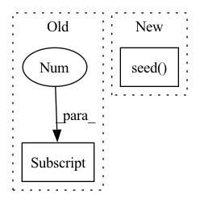

Pattern ID :29999
Before Change
def main(args):
// DATA
data_dir = args[0]
train_dir = os.path.join(data_dir, "train")
val_dir = os.path.join(data_dir, "val")
test_dir = os.path.join(data_dir, "test")
After Change
// SEEDING
random.seed(cfg.seed)
np.random.seed( cfg.seed)
torch.manual_seed(cfg.seed)
// DATA
data_dir = cfg.in_pathIn pattern: SUPERPATTERN
Frequency: 6
Non-data size: 2
Instances Fragment ID: 88949048
Project Name: ais-bonn/vp-suite
Commit Name: 9c9462c424959ca249e7050593f3a177d248bcbb
Time: 2021-07-21
Author: boltres@ais.uni-bonn.de
File Name: train_seg_model.py
M Class Name: AnonimousClass
N Class Name: AnonimousClass
M Method Name: main(1)
N Method Name: main(1)
M Parent Class:
N Parent Class:
M File Name: train_seg_model.py
N File Name: train_seg_model.py
M Start Line: 17
M End Line: 17
N Start Line: 19
N End Line: 24
Before Change
//print
print("Batch with largest number of atoms: {}".format(int(n_atoms_per_batch.max())))
print("Batch with smallest number of atoms: {}".format(int(n_atoms_per_batch.min())))
print("Number of pairs: {}, Number of particles: {}".format(int(neighbors.shape[1] ), int(n_atoms_per_batch.to(torch.double).
sum().item())))
if device == "cuda":
torch.cuda.synchronize()After Change
Average time per batch in seconds.
torch.random.manual_seed(12344)
np.random.seed( 43211)
num_particles = total_num_particles // n_batches
expected_num_neighbors = mean_num_neighbors
cutoff = np.cbrt(3 * expected_num_neighbors / (4 * np.pi * density));
n_atoms_per_batch = torch.randint(int(num_particles/2), int(num_particles*2), size=(n_batches,),device="cpu") Fragment ID: 88949050
Project Name: torchmd/torchmd-net
Commit Name: 730ecd458eea34f7e18cf47960d6ad4e5561c9ef
Time: 2023-05-06
Author: raulppelaez@gmail.com
File Name: benchmarks/neighbors.py
M Class Name: AnonimousClass
N Class Name: AnonimousClass
M Method Name: benchmark_neighbors(6)
N Method Name: benchmark_neighbors(5)
M Parent Class:
N Parent Class:
M File Name: benchmarks/neighbors.py
N File Name: benchmarks/neighbors.py
M Start Line: 27
M End Line: 68
N Start Line: 10
N End Line: 68
Before Change
attributions_batch.append(np.reshape(attribution, (len(image_batch), 1, W, W)))
attributions.append(np.concatenate(attributions_batch, axis=1))
attributions = np.abs(np.concatenate(attributions))
corr = np.corrcoef(attributions.swapaxes(1, -1).reshape(-1, dim_latent))[0]
metric = off_diagonal_sum(corr)/(dim_latent*(dim_latent-1))
corr = spearmanr(attributions[:, 0, :, :].flatten(),
attributions[:, 1, :, :].flatten())[0]After Change
def disvae_feature_importance(random_seed: int = 1, batch_size: int = 300, n_plots: int = 20,
dim_latent: int = 5, n_epochs: int = 20, beta_list: list = [0, 1, 5, 10]) -> None:
// Initialize seed and device
np.random.seed( random_seed)
torch.random.manual_seed(random_seed)
device = torch.device("cuda") if torch.cuda.is_available() else torch.device("cpu")
loss_types = ["betaH", "btcvae"]
W = 32 Fragment ID: 88949045
Project Name: jonathancrabbe/label-free-xai
Commit Name: 670df0e236ee35231f0447f487fbcf9ce1a3baa2
Time: 2021-12-16
Author: jonathan.cr1302@gmail.com
File Name: experiments/mnist.py
M Class Name: AnonimousClass
N Class Name: AnonimousClass
M Method Name: disvae_feature_importance(6)
N Method Name: disvae_feature_importance(6)
M Parent Class:
N Parent Class:
M File Name: experiments/mnist.py
N File Name: experiments/mnist.py
M Start Line: 341
M End Line: 363
N Start Line: 304
N End Line: 368
Before Change
regular nodes.
node_set = set(range(data.x.shape[0] ))
target_nodes = np.random.choice(list(node_set), size=n, replace=False)
candidate_set = node_set.difference(set(target_nodes))
After Change
raise ValueError("k should be int, got %s" % k)
if random_state:
np.random.seed( random_state)
node_set = set(range(data.num_nodes))
outlier_idx = np.random.choice(list(node_set), size=n, replace=False) Fragment ID: 88949047
Project Name: pygod-team/pygod
Commit Name: 9dd44a7c9d6536a511637a44caa85e48c1ba8e66
Time: 2022-04-14
Author: ytongdou@gmail.com
File Name: pygod/utils/outlier_generator.py
M Class Name: AnonimousClass
N Class Name: AnonimousClass
M Method Name: gen_attribute_outliers(4)
N Method Name: gen_attribute_outliers(3)
M Parent Class:
N Parent Class:
M File Name: pygod/utils/outlier_generator.py
N File Name: pygod/utils/outlier_generator.py
M Start Line: 97
M End Line: 113
N Start Line: 86
N End Line: 148
Before Change
def worker(remote, env_fn):
// Ignore CTRL+C in the worker process
signal.signal(signal.SIGINT, signal.SIG_IGN)
env = env_fn(1)[0]
print("env generated at process ID: {}".format(os.getpid()))
try:
while True:
cmd, data = remote.recv()After Change
torch.manual_seed(seed)
env = make_env()
env.seed( seed)
lazy_agent = lazy_agent_class(shared_models)
print("env generated at process ID: {}".format(os.getpid()))
while not done_event.is_set(): Fragment ID: 88949041
Project Name: syuntoku14/pytorch-rl-il
Commit Name: 44827568e5fb19b2ea99d6b31219a8e82067cab3
Time: 2020-04-01
Author: syuntoku14@gmail.com
File Name: rlil/samplers/sampler.py
M Class Name: AnonimousClass
N Class Name: AnonimousClass
M Method Name: worker(9)
N Method Name: worker(2)
M Parent Class:
N Parent Class:
M File Name: rlil/samplers/sampler.py
N File Name: rlil/samplers/sampler.py
M Start Line: 97
M End Line: 128
N Start Line: 15
N End Line: 50
Before Change
regular nodes.
node_set = set(range(data.x.shape[0] ))
new_edges = []
sample_indices = []
for i in range(0, n):After Change
check_parameter(m*n, low=1, high=data.num_nodes, param_name="m*n")
if random_state:
np.random.seed( random_state)
new_edges = []
outlier_idx = np.random.choice(data.num_nodes, size=m * n, replace=False) Fragment ID: 88949043
Project Name: pygod-team/pygod
Commit Name: 9dd44a7c9d6536a511637a44caa85e48c1ba8e66
Time: 2022-04-14
Author: ytongdou@gmail.com
File Name: pygod/utils/outlier_generator.py
M Class Name: AnonimousClass
N Class Name: AnonimousClass
M Method Name: gen_structure_outliers(4)
N Method Name: gen_structure_outliers(3)
M Parent Class:
N Parent Class:
M File Name: pygod/utils/outlier_generator.py
N File Name: pygod/utils/outlier_generator.py
M Start Line: 43
M End Line: 61
N Start Line: 18
N End Line: 78